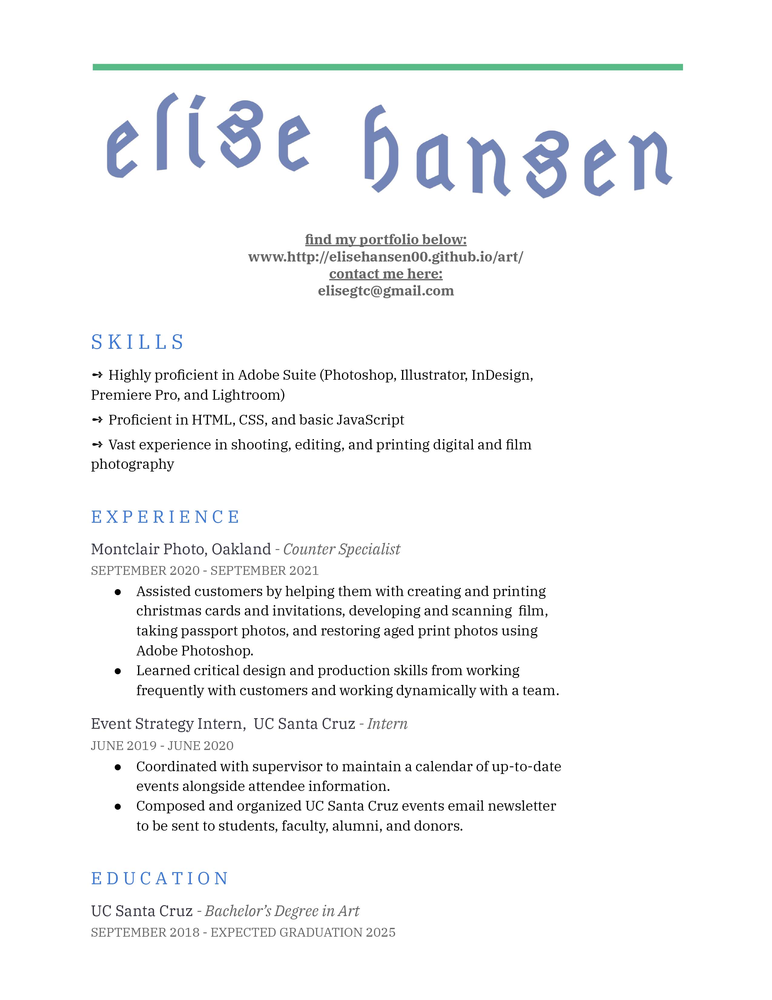
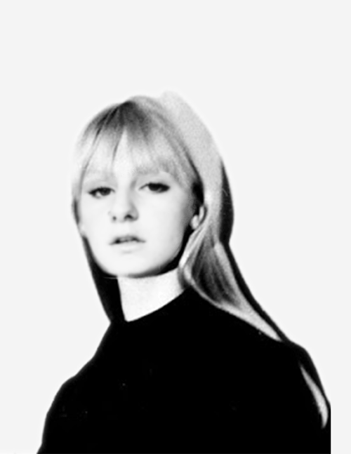

Elise is an artist first and a designer second. She is deeply rooted in her community, and her vast experience in photography shows that she is deeply observant and pays attention to what the signs and sights are showing her. She self describes as "a bit good at a lot of different things," and this shows in the fact that she has learned every type of art and design. From figure drawing to t-shirt design, and from video editing to sticker making, Elise has always strived to absorb as much information as she can, knowing that design is truly about creating a narrative, and showing people the whole story through a brief image.
She is also a student pursuing digital art and design within the Art BA program at the University of California Santa Cruz. She is curious and an eager leaner, and has gained skills in a variety of Adobe Suite programs, coding in HTML, CSS, and JavaScript, digital and film photographry, within a large scope of artistic mediums.
In her free time you can find her going on long walks, reading history books, and cooking delicious meals. Most of all, Elise prides herself in being extremely curious and open to new ideas and people in the world around her.